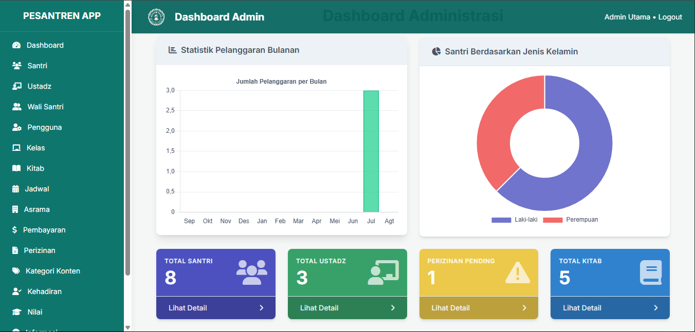

Aplikasi Manajemen dan Sistem Informasi Pondok Pesantren
Laporan Proyek
Latar Belakang Proyek
Sistem manual dalam pengelolaan data pesantren seperti santri, absensi, dan keuangan memiliki banyak kelemahan. Proyek ini hadir sebagai solusi untuk meningkatkan efisiensi dan akurasi.
Tujuan Proyek
- Membuat sistem manajemen data santri yang terstruktur.
- Mempermudah proses absensi dan pengelolaan jadwal.
- Menyediakan akses data melalui aplikasi mobile.
- Meningkatkan Kedisiplinan Santri dan Ustadz
- Menyediakan laporan kegiatan secara otomatis.
- Memberikan informasi kepada wali santri dengan cepat.
Fitur Utama
- Data Santri: Input, edit, dan hapus data santri.
- Absensi: Pencatatan kehadiran harian dengan filter.
- Jadwal Kegiatan: Penjadwalan dengan notifikasi.
- Dashboard Laporan: Statistik Hafalan dalam bentuk grafik.
- Manajemen Akun: Hak akses berbeda (admin, ustadz, santri, wali santri).
- Informasi Cepat: Wali santri dapat melihat kehadiran, pelanggaran, serta pembayaran santri.
Alur Sistem & Arsitektur
Admin mengelola data melalui aplikasi web, sementara pengguna lain dapat memantau melalui aplikasi mobile yang terhubung ke server melalui API.
Klik di sini untuk melihat skema Arsitektur Sistem

Teknologi yang Digunakan
- Backend: Laravel 12, PHP 8.3.16
- Database: MySQL (Laragon)
- Frontend Web: Blade Laravel, CSS
- Mobile: Expo Go (React Native)
- Tools: Postman, GitHub, VS Code
Proses Pengerjaan
- Perencanaan dan Analisis: Mengidentifikasi kebutuhan dan merancang diagram alur.
- Desain: Membuat antarmuka pengguna (UI) yang sederhana dan struktur database.
- Implementasi: Membangun backend dengan Laravel dan aplikasi mobile dengan Expo Go.
- Pengujian: Menguji API dengan Postman dan memastikan fungsi berjalan.
Kendala dan Solusi
- Kesulitan Relasi Database: Solusi dengan mempelajari dokumentasi Laravel dan konsultasi.
- API Tidak Berjalan: Solusi dengan debugging menggunakan Postman.
- MySQL Error: Solusi dengan migrasi ke Laragon dan menggunakan GitHub.
Hasil Akhir & Status Implementasi
- Web App: Fitur data santri, absensi, dan jadwal sudah berfungsi.
- Mobile App: Terhubung dengan API dan menampilkan data secara real-time.
- Status: Masih dalam tahap prototipe dan uji coba.